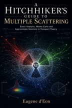
A Hitchhiker’s Guide to Multiple Scattering
Exact Analytic, Monte Carlo and Approximate Solutions in Transport Theory
Eugene d’Eon

A Hitchhiker’s Guide to Multiple Scattering
Exact Analytic, Monte Carlo and Approximate Solutions in Transport Theory
Eugene d’Eon
FacetForge - Reference C++ implementations of microfacet BSDFs with unbiased multiple scattering and flexible NDF support.
Mitsuba - My fork of Mitsuba 0.x with BSDF implementations of some of my previous work.
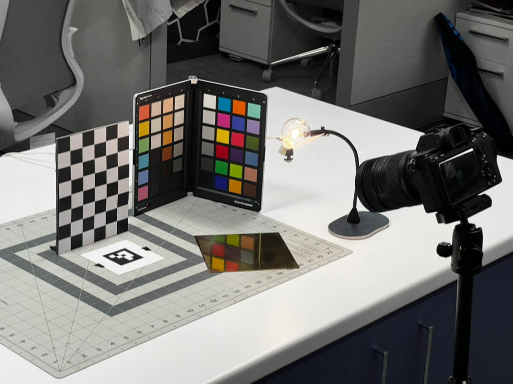
On the Accuracy of Surface Scattering Theories
Matthew Avolio | Eugene d’Eon | Shlomi Steinberg
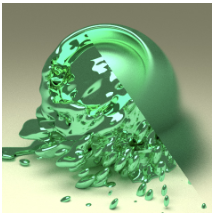
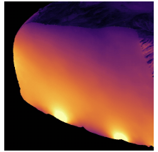
Harmonic caching for walk on spheres
Zihong Zhou | Eugene d’Eon | Rohan Sawhney | Wojciech Jarosz
ACM Transactions on Graphics (Proceedings of SIGGRAPH Asia), 44(6), December 2025
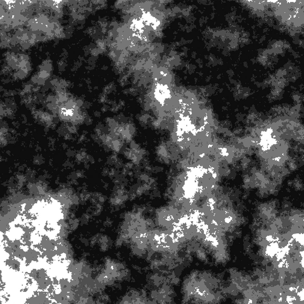
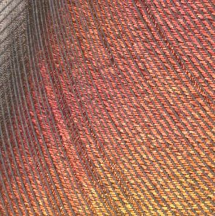
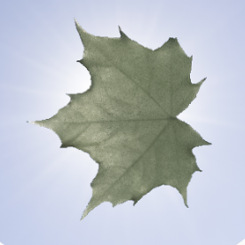
A Generalized Ray Formulation For Wave-Optics Rendering
Shlomi Steinberg | Ravi Ramamoorthi | Benedikt Bitterli | Eugene d'Eon | Ling-Qi Yan | Matt Pharr
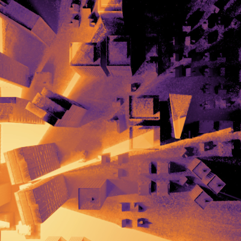
Shlomi Steinberg | Ravi Ramamoorthi | Benedikt Bitterli | Arshiya Mollazainali | Eugene d'Eon | Matt Pharr
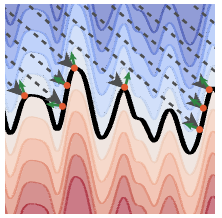
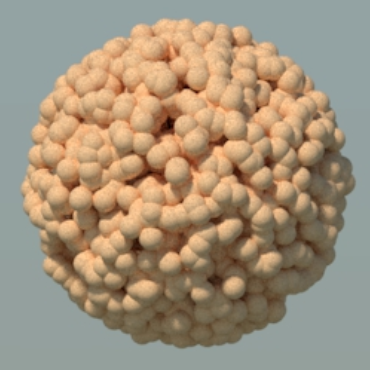
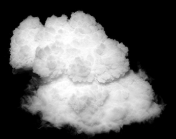
An Approximate Mie Scattering Function for Fog and Cloud Rendering
Johannes Jendersie | Eugene d’Eon
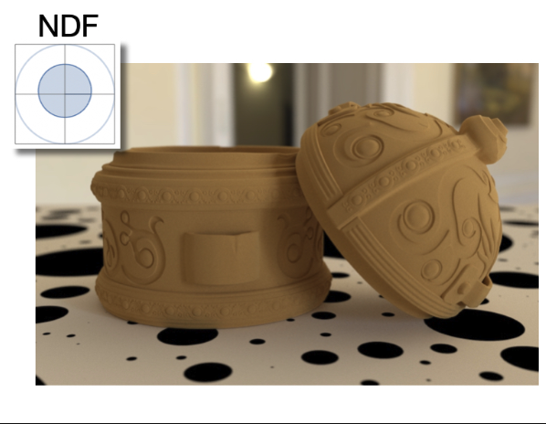
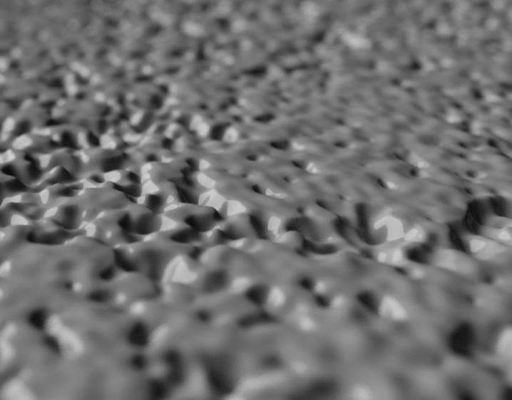
Microfacet Theory for Non-uniform Heightfields
Eugene d’Eon | Benedikt Bitterli | Andrea Weidlich | Tizian Zeltner
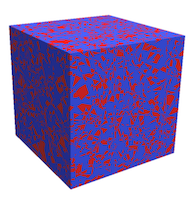
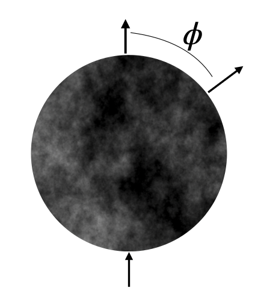
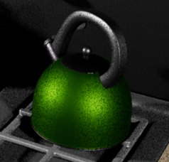
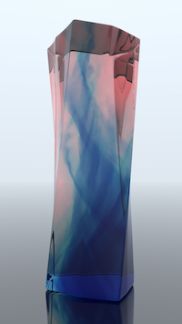
An unbiased ray-marching transmittance estimator
Markus Kettunen | Eugene d’Eon | Jacopo Pantaleoni | Jan Novak
Markovian Binary Mixtures: Benchmarks for the albedo problem
Coline Larmier | Eugene d’Eon | Andrea Zoia
ANS M&C 2021
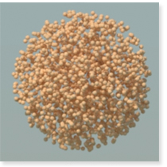
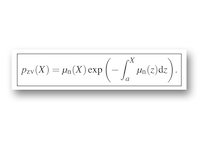
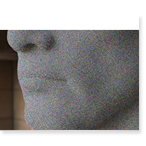
Zero-Variance Theory for Efficient Subsurface Scattering
Eugene d’Eon | Jaroslav Křivánek
SIGGRAPH 2020 Courses: Advances in Monte Carlo rendering: the legacy of Jaroslav Křivánek
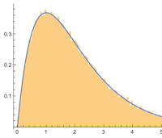
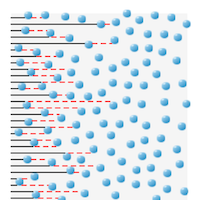
The Albedo Problem in Nonexponential Radiative Transfer
Eugene d’Eon
International Conference on Transport Theory (ICTT) – September, 2019, Paris
Nonexponential Radiative Transfer: Reciprocity, Monte Carlo Estimation and Diffusion Approximation
Eugene d’Eon
International Conference on Transport Theory (ICTT) – September, 2019, Paris
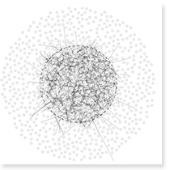
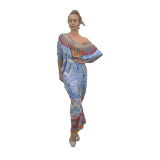
JPEG Pleno Database: 8i Voxelized Full Bodies (8iVFB v2) – A Dynamic Voxelized Point Cloud Dataset
Eugene d’Eon | Bob Harrison | Taos Myers | Philip A. Chou
ISO/IEC JTC1/SC29 Joint WG11/WG1 (MPEG/JPEG) input document WG11M40059/WG1M74006, Geneva, January 2017
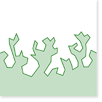
Additional Progress Towards the Unification of Microfacet and Microflake Theories
Jonathan Dupuy | Eric Heitz | Eugene d’Eon
Diffusion approximations for nonclassical Boltzmann transport in arbitrary dimension
Eugene d’Eon
Tech Report
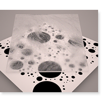
Multiple-Scattering Microfacet BSDFs with the Smith Model
Eric Heitz | Johannes Hanika | Eugene d’Eon | Carsten Dachsbacher
A Zero-variance-based Sampling Scheme for Monte Carlo Subsurface Scattering
Jaroslav Krivanek | Eugene d’Eon
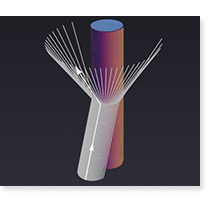
A Fiber Scattering Model With Non-Separable Lobes
Eugene d’Eon | Steve Marschner | Johannes Hanika
[1-page abstract (325 KB)] [Slides (2.6 MB)] [Supplemental (1.6 MB)]
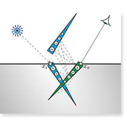
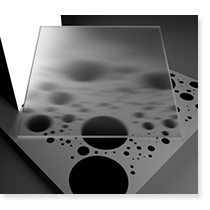
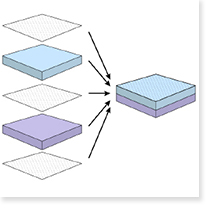
A Comprehensive Framework for Rendering Layered Materials
Wenzel Jakob | Eugene d’Eon | Otto Jakob | Steve Marschner
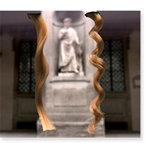
Importance Sampling for Physically-based Hair Fiber Models
Eugene d’Eon | Steve Marschner | Johannes Hanika
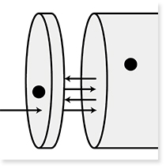
A Principle of Invariant Imbedding with Memory
Eugene d’Eon
International Conference on Transport Theory 23 (Sept 2013, Santa Fe, New Mexico)
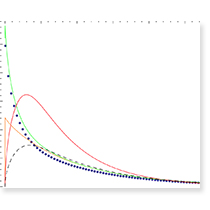
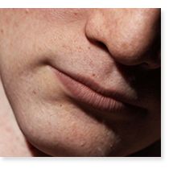
A Quantized-Diffusion Model for Rendering Translucent Materials
Eugene d’Eon | Geoffrey Irving
An Energy-Conserving Hair Reflectance Model
Eugene d’Eon | Guillaume Francois | Martin Hill | Joe Letteri | Jean-Marie Aubry
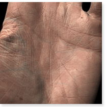
A Layered, Heterogeneous Reflectance Model for Acquiring and Rendering Human Skin
Craig Donner | Tim Weyrich | Eugene d’Eon | Ravi Ramamoorthi | Szymon Rusinkiewicz
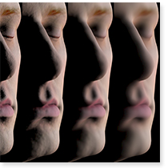
Efficient Rendering of Human Skin
Eugene d’Eon | David Luebke | Eric Enderton
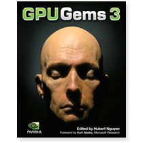
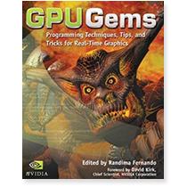